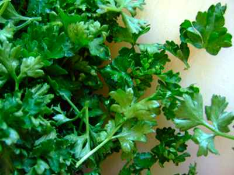

Soupe au cerfeuil maison
Ingrédients
- Poireaux
- Cerfeuil
- Un peu de beurre
- Sel (1 cuiller à café)
- Poivre
- Thym
- Laurier
Préparation
Une soupe au cerfeuil est une soupe aux poireaux dans laquelle on ajoute du cerfeuil:
- Nettoyez les poireaux, tout en laissant un peu de vert. Ensuite, coupez-les en 2 dans le sens de la longueur, débitez-les en morceaux de 1,5 à 2 cm de long et lavez-les bien.
- Mettez l'eau dans une grande casserole et ajoutez-y 1 feuille de laurier, du thym puis saler le tout et faites-le bouillir.
- Quand l'eau bout, ajoutez les poireaux et faites cuire le tout en remuant de temps en temps.
- Après 30 minutes de cuisson, retirez le thym et le laurier et passez le tout au mixer.
- Ajoutez le cerfeuil haché puis refaites bouillir le tout.
- Poivrez et rectifiez ensuite l'assaisonnement si nécessaire.